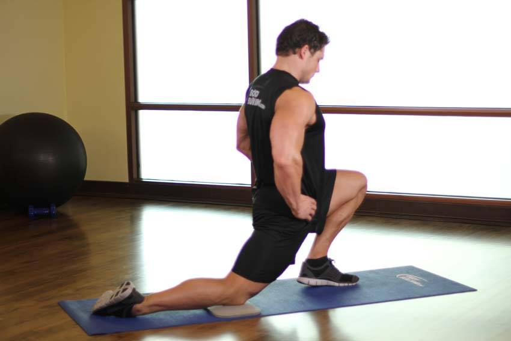

- Kneel on a mat and bring your right knee up so the bottom of your foot is on the floor and extend your left leg out behind you so the top of your foot is on the floor.
- Shift your weight forward until you feel a stretch in your hip. Hold for 15 seconds, then repeat for your other side.
This exercise appears in Programmd training programs. Take the quiz to find one for your gym.
Find your program